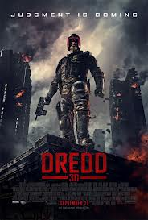

Dredd (2012)
Première: donderdag 11 oktober 2012
Regie: Pete Travis
Cast: Lena Headey | Karl Urban | Olivia Thirlby | Domhnall Gleeson |
Santi Scinelli | Deobia Oparei | Jason Cope | Brandon Livanos |
Langley Kirkwood | Rakie Ayola | Allen Irwin | Scott Sparrow |
Joe Vaz | Luke Tyler | Nicole Bailey
Genre: Actie, Science Fiction
Lengte: 95 minuten
Remake van de scifi-actiefilm waarin Judge Dredd (Karl Urban) een stad uit de klauwen van Ma-Ma moet redden
Dredd speelt zich af op de straten van Mega City One, een eenzame oase van quasi-beschaving op de vervloekte Aarde. De meest gevreesde straatrechter Judge Dredd (Karl Urban) neemt het samen met de paranormale aspirant-rechter Cassandra Anderson (Olivia Thirlby) op tegen de slechterik Ma-Ma (Lena Headey).
Zij is de baas van een drugsbende die handelt in een nieuwe drug die de realiteitszin aantast en zich schuilhoudt in Peach Trees, een enorm flatgebouw.
Zowel het origineel uit 1995 als deze remake zijn gebaseerd op stripboeken. In de remake doen de Judges, anders dan in het origineel, hun helms niet af om trouw te blijven aan de strips.
Officiële trailer van Dredd
Dredd speelt zich af op de straten van Mega City One, een eenzame oase van quasi-beschaving op de vervloekte Aarde. De meest gevreesde straatrechter Judge Dredd (Karl Urban) neemt het samen met de paranormale aspirant-rechter Cassandra Anderson (Olivia Thirlby) op tegen de slechterik Ma-Ma (Lena Headey).
Zij is de baas van een drugsbende die handelt in een nieuwe drug die de realiteitszin aantast en zich schuilhoudt in Peach Trees, een enorm flatgebouw.
Zowel het origineel uit 1995 als deze remake zijn gebaseerd op stripboeken. In de remake doen de Judges, anders dan in het origineel, hun helms niet af om trouw te blijven aan de strips.
Officiële trailer van Dredd